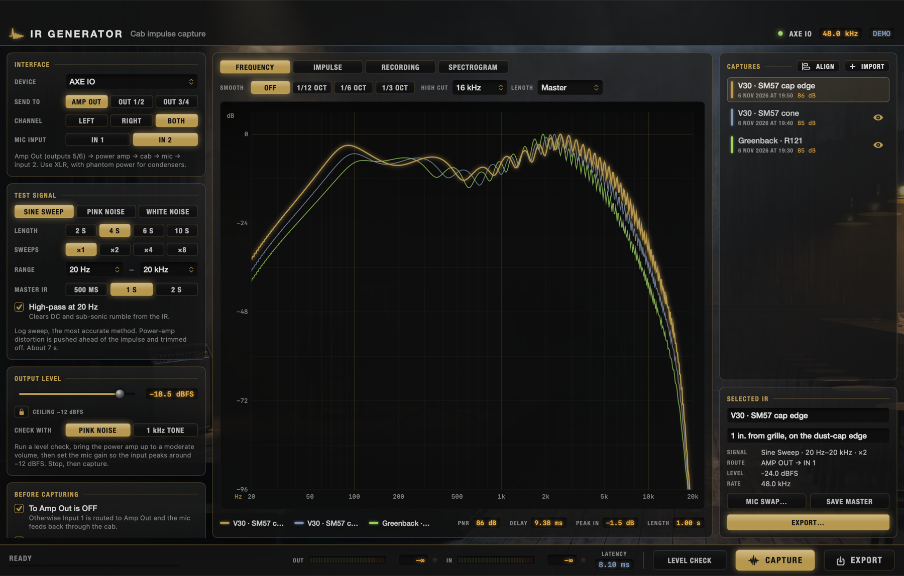
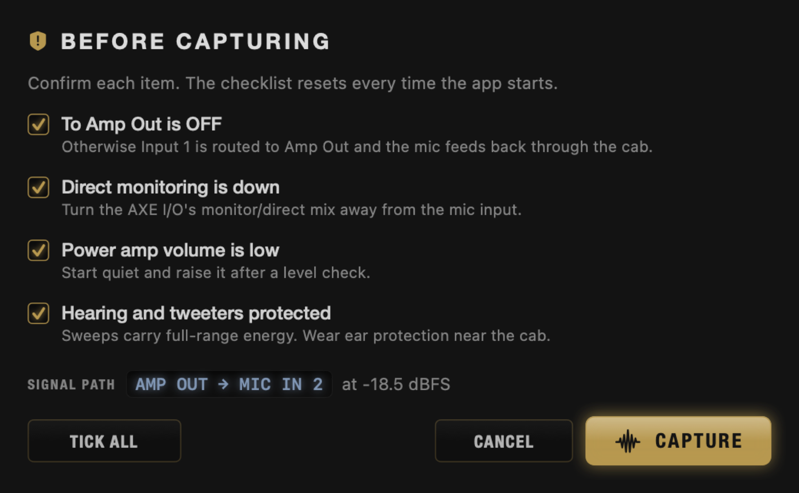
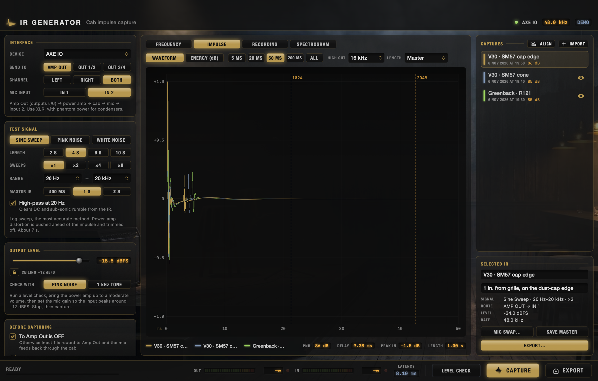
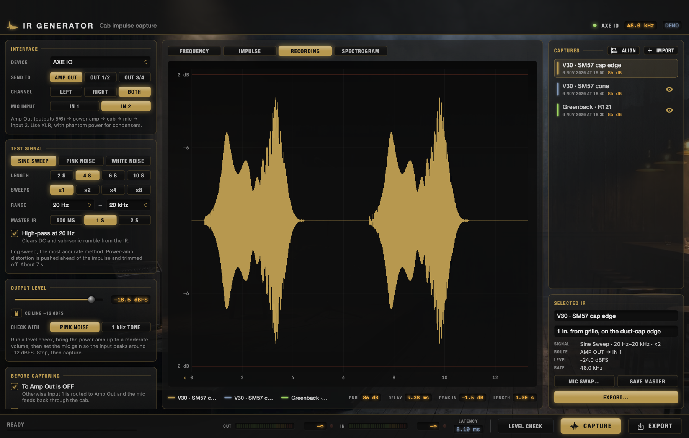
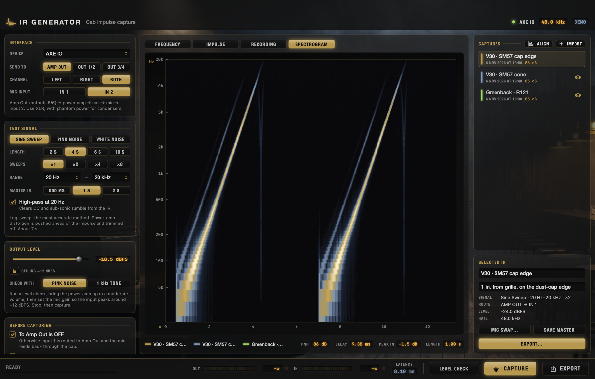
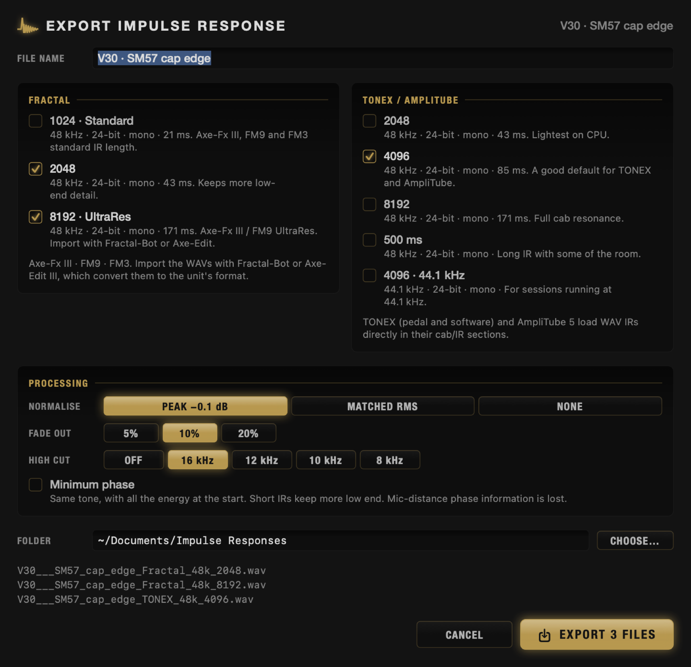
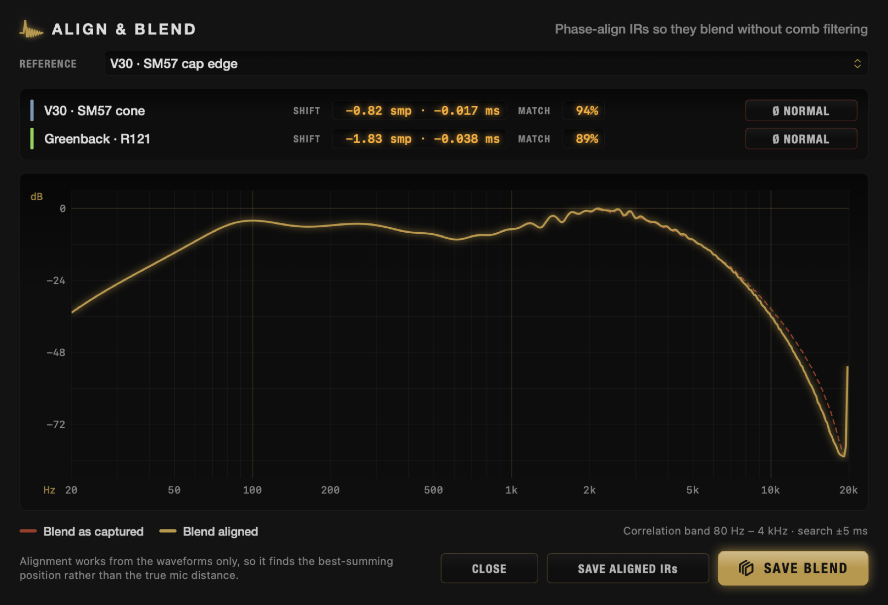
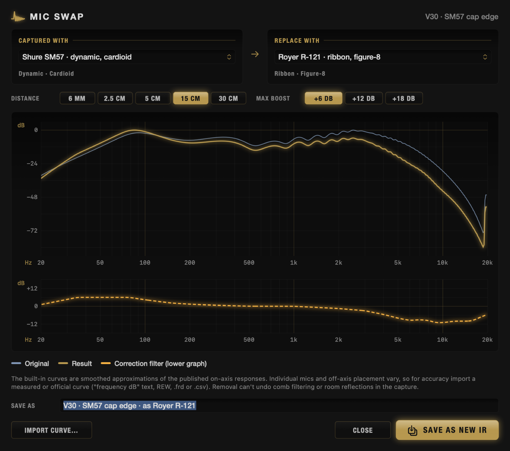

IRGenerator --demo), which fills the library with simulated captures. Your own captures will look
similar, but with the character of your cab, mic and room.An impulse response (IR) is a short audio file that describes how something changes a signal, in this case how a guitar speaker, its cabinet, the microphone and its position colour the sound of an amp. Amp modellers such as TONEX, AmpliTube and the Fractal Axe-Fx, FM9 and FM3 use IRs in place of a real cab and mic.
IR Generator lets you make your own. It sends a test signal from the AXE I/O's Amp Out into a power amp and your cab, records the result through a mic, and works out the IR mathematically. You can then inspect it, compare it with other captures, combine mics, and export files in the exact formats your modellers expect.
The default test signal is a logarithmic sine sweep: a tone that glides from 20 Hz to 20 kHz over a few seconds. The app records what the mic hears and divides the recording by the sweep in the frequency domain (deconvolution). What's left is the cab's impulse response. A useful property of the log sweep is that the power amp's harmonic distortion ends up before the main impulse in time, where the app trims it off, so the IR describes the cab and not the amp's distortion.
Use IK's control panel (or Axeio Silicon) before you capture:
Start with the mic 2–3 cm from the grille, pointing at the edge of the speaker's dust cap. Moving towards the centre makes it brighter; moving out towards the cone edge makes it darker and warmer. Name each capture after the position (for example "V30 · SM57 cap edge") so you can compare them later.
IR Generator has several safeguards:

| Area | What it's for |
|---|---|
| Top bar | The connected interface, its sample rate, and a Demo badge in demo mode. |
| Left column | Capture set-up: interface and routing, test signal, output level, the safety checklist, and latency calibration. |
| Centre | The graphs, with tabs for Frequency, Impulse, Recording and Spectrogram. Each tab has its own controls in the second row. The legend and the selected capture's metrics are underneath. |
| Right column | The capture library, with Align and Import buttons. Underneath it, the Selected IR card: name, notes, details, and the Mic Swap, Save Master and Export buttons. |
| Bottom bar | Status and progress, output and input meters with peak readouts, the measured latency, and the Level Check, Capture and Export buttons. |
| PNR | Peak-to-noise ratio: how far the IR's peak sits above the noise floor. 70 dB or more is a clean capture. Below 45 dB the app suggests raising the level or adding sweeps. |
| Delay | Time from the start of playback to the direct sound arriving: interface latency plus the mic's distance from the speaker. |
| Peak in | The highest input level during the capture. Aim for about −12 dBFS. At −0.1 dBFS or above, the app warns that the input clipped. |
| Length | Length of the master IR (0.5, 1 or 2 s). |
| Device | Any duplex Core Audio interface. The AXE I/O is selected automatically when connected. |
| Send to | Amp Out (outputs 5/6, instrument level, for an amp input) or Out 1/2, Out 3/4 (line level, for a line-input power amp or the loopback test). |
| Channel | Left, right or both outputs of the pair. |
| Mic input | The AXE I/O input your mic is plugged into. |
| Sine sweep | The most accurate method, and the default. Choose the length (2–10 s; longer gives more signal-to-noise) and the number of sweeps to average (×1 to ×8). |
| Pink / White noise | A repeating noise burst, averaged over 4–32 periods. Useful in noisy rooms or as a cross-check. Pink is gentler on tweeters. |
| Range | The frequency range of the test signal, 20 Hz–20 kHz by default. |
| Master IR | How much of the IR to keep in the library: 500 ms, 1 s or 2 s. Exports are cut from this. |
| High-pass at 20 Hz | Removes DC offset and sub-sonic rumble. Leave it on. |
The slider sets the level of the test signal leaving the AXE I/O. Click Level Check (⌘L) to play looped pink noise or a 1 kHz tone, then:
To measure the interface's round-trip latency, patch Out 1 into Input 2 (set to LINE), choose Out 1/2 and In 2, and click Calibrate. With Keep mic distance delay ticked, IRs then keep the mic's time of flight.
The graphs show the selected capture plus any others whose eye button is on in the library, each in its own colour. Hover over a graph for an exact readout.
The magnitude response on a logarithmic scale from 20 Hz to 20 kHz. Each curve is scaled so its loudest point between 40 Hz and 12 kHz sits at 0 dB, so captures at different levels are easy to compare, and the dB scale fits itself to the curves. Smooth averages over 1/12, 1/6 or 1/3 of an octave; High cut previews the export filter (chapter 9); Length shows the response as it will be after cutting to an export length. Short IRs lose low-end detail, and this shows how much.
A typical guitar cab rises from the low end to a peak around 80–120 Hz, has presence peaks between 2 and 5 kHz, and falls steeply above 5–6 kHz. The wiggles in the upper mids are the speaker's cone breakup, part of its character.

Waveform shows the IR itself; Energy (dB) shows its decay on a log scale, which makes the noise floor and late resonances visible. The span buttons zoom from 5 ms to the whole IR.

Use this to check the level was sensible and nothing unexpected (a door slam, a car) happened during the sweep.

The bright rising line is the sweep. Fainter lines above it are harmonic distortion from the power amp or speaker; the deconvolution moves these ahead of the IR and they're trimmed away. Horizontal lines that run through the whole recording are hum or background noise.
Every capture is saved automatically, with a 32-bit float master IR, the raw recording and its settings. The library survives relaunches, and you can re-export any capture with different settings later.
| Export… | Open the export sheet for this capture. |
| Save Master… | Save the full-length 32-bit float IR as a WAV. |
| Reprocess from Recording | Rebuild the IR from the raw recording with the current settings (high-pass, keep delay, master length). |
| Save Raw Recording… | Save the mic recording, for example to process in other software. |
| Show Original | For processed IRs, select the capture it was made from. |
| Delete | Remove the capture and its files. |

| Preset | Rate | Length | Use |
|---|---|---|---|
| Fractal Standard | 48 kHz | 1024 (21 ms) | Axe-Fx III, FM9, FM3 standard IR slots |
| Fractal 2048 | 48 kHz | 2048 (43 ms) | More low-end detail |
| Fractal UltraRes | 48 kHz | 8192 (171 ms) | Axe-Fx III / FM9 UltraRes |
| TONEX / AmpliTube | 48 kHz | 2048 · 4096 · 8192 · 500 ms | 4096 is a good default |
| TONEX / AmpliTube | 44.1 kHz | 4096 | Sessions at 44.1 kHz |
All exports are mono 24-bit WAV, named <name>_<Fractal|TONEX>_<rate>_<length>.wav.
| Normalise | Peak −0.1 dB (the loudest sample just below full scale, the usual choice), Matched RMS (every IR at the same loudness, good for A/B comparison in a modeller), or None. |
| Fade out | Length of the half-Hann fade at the end of each file (5, 10 or 20%), so cutting the IR short doesn't click. |
| High cut | A 24 dB/octave low-pass. See below. |
| Minimum phase | Moves all the energy to the start of the IR without changing its tone. Short IRs keep more low end, but the timing between mics is lost, so don't use it on IRs you'll blend. |
Usually, yes, set gently. A guitar speaker puts out very little above about 6–8 kHz. What the capture shows up there is mostly mic hiss and noise at the edge of the sweep, which a high-gain amp turns into fizz. The filter is flat below its cutoff, so 10–12 kHz cleans the top without changing the tone. 8 kHz and below starts to dull the pick attack. The master IR in the library is never changed, so try a few settings and compare by ear.
Blending two mics (for example an SM57 and a ribbon) is a classic way to build a fuller cab sound. If the two IRs are even a fraction of a millisecond apart, though, they cancel at some frequencies and sound thin and phasey (comb filtering). Align & Blend lines them up first.

Every mic colours the sound. Mic Swap divides out the capture mic's frequency response to leave the speaker on its own, or replaces it with another mic's response.

Built-in curves: SM57, MD 421, e906, i5, RE20, SM7B (dynamic); R-121, M 160 (ribbon); C414, U 87 (condenser); and
flat. They're smoothed approximations of published on-axis responses, not manufacturer data. For better accuracy,
click Import Curve… and load a measured or official response as a text, REW, .frd
or .csv file of frequency and dB pairs.
TONEX (software and pedal, via the TONEX editor) and AmpliTube 5 load standard WAV IRs directly in their cab / IR sections. Use the TONEX / AmpliTube presets, 4096 samples at 48 kHz unless you have a reason to change it. Choose the 44.1 kHz version only if your session or host runs at 44.1 kHz.
Import the WAVs with Fractal-Bot or Axe-Edit III, which convert them to the unit's own format and store them in a user cab slot. Export 1024 for the standard slots, 2048 where supported, and 8192 UltraRes for UltraRes slots on the Axe-Fx III and FM9.
| Problem | What to try |
|---|---|
| No audio device, or the AXE I/O isn't listed | Check the USB connection and that macOS sees the AXE I/O in Audio MIDI Setup. The device list refreshes on its own. |
| Input meter doesn't move | Allow microphone access in System Settings › Privacy & Security › Microphone. Check the mic input selection and the AXE I/O gain, and phantom power for condensers. |
| Capture button does nothing | The safety checklist isn't complete: tick the items in the sheet or in the Before capturing card. |
| Howling or feedback | Press Esc. Turn To Amp Out off and direct monitoring down on the AXE I/O. |
| Low PNR, hissy IR | Raise the output level (and power-amp volume), use a longer sweep or more sweeps, and reduce room noise. A 10–12 kHz high cut on export also helps. |
| Clipping warning | Turn the mic gain down so the input peaks around −12 dBFS. |
| The impulse looks cut off at the start | Turn off Keep mic distance delay (or recalibrate), then use Reprocess from Recording. |
| Blend sounds thin or phasey | Use Align & Blend, and check polarity. Don't export IRs for blending as minimum phase. |
| ⌘R | Capture |
| ⌘L | Level check |
| Esc | Stop |
| ⌘E | Export the selected IR |
| ⌘B | Align & Blend |
| ⌘M | Mic Swap |
| ⌘I | Import WAV IRs |
~/Library/Application Support/IR Generator/
Captures/<id>/meta.json: settings, name, notesCaptures/<id>/ir.wav: master IR, 32-bit floatCaptures/<id>/recording.wav: raw mic recordingMics/: imported mic curvesExports go to ~/Documents/Impulse Responses unless you choose another folder.
| Sweep | Exponential sine sweep (Farina): x(t) = sin(2π f₁ L (et/L − 1)), L = T / ln(f₂/f₁), with faded ends and averaging. |
| Noise | Band-limited periodic pink or white noise, one 2¹⁶-sample period built in the frequency domain, synchronously averaged and deconvolved circularly. |
| Deconvolution | H = Y·X* / (|X|² + ε(f)), double-precision FFT. ε is tiny in band and rises over a third of an octave outside it, so out-of-band noise isn't amplified. |
| Trimming | Onset at the first sample within −20 dB of the peak; 0.2 ms kept before it and faded in. Optional 20 Hz 2nd-order Butterworth high-pass. |
| Audio engine | One Core Audio IOProc, written in C, plays and records in the same callback: the recording is sample-aligned with playback and the audio thread never runs Swift. |
| Export | Optional minimum phase (real cepstrum), Kaiser windowed-sinc resampling with gain preserved, optional 4th-order Butterworth high cut, half-Hann fade, normalisation. |
| Alignment | Cross-correlation band-limited to 80 Hz–4 kHz over ±5 ms, parabolic sub-sample peak, polarity from the peak's sign, fractional shift by FFT phase ramp. |
| Mic Swap | Minimum-phase correction FIR from the dB ratio of the two mic curves, with each pattern's proximity effect at the set distance, limited boost and cut, faded to 0 dB below 35 Hz and above 16 kHz. |
IR Generator is open source under the MIT licence. The backdrop photograph is GM Guitars artwork and is not covered by the licence. AXE I/O, TONEX and AmpliTube are trademarks of IK Multimedia. Axe-Fx, FM9, FM3, Fractal-Bot and Axe-Edit are trademarks of Fractal Audio Systems. Microphone names identify the response curves being approximated. This project isn't affiliated with or endorsed by any of these companies.